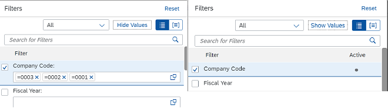

What's New in SAPUI5 1.86
What's New in SAPUI5 1.86
New Features
Preannouncement: End of Support for Microsoft Internet Explorer 11 after SAPUI5 1.87 SAPUI5 1.87 will be the last version to support Microsoft Internet Explorer 11. For more information, see SAPUI5 Support Status for Microsoft Internet Explorer 11. |
Improved Features
|
SAPUI5 OData V4 Model The new version of the SAPUI5 OData V4 model introduces the following features:
For more information, see OData V4 Model, the API Reference, and the Samples in the Demo Kit. |
Improved Controls
|
We have introduced two ways to set the text direction in the control:
To set the text alignment for the DOM element of the control, you
can now use the For more information, see the API Reference and the Samples. |
|
Value states are not shown when the controls are in read-only or disabled mode. If the controls are set as enabled and editable later, then value states are shown. |
|
The colon symbol (:) is represented differently in different
languages. In German the colon is followed by a space, in French
the colon is preceded by a |
|
With the new experimental |
In
version 1.85.1 we have added the |
|
We have introduced the |
|
|
|
The Filters dialog of the control has been improved: You can now toggle between List View and Group View depending on how you would like to view the filtered data. For example, you might want to use the list view if there is only a small number of fields available. You can also choose between Hide Values and Show Values, if you want to see the filter values for the active filter fields.  For more information, see the Sample. |
|
|
|
For more information, see the Sample. |
|
|
|
The |
|
We have enabled TinyMCE version 5 to be used with
|
|
The |
SAP Fiori Elements
The following changes and new features are available for SAP Fiori elements for OData V2:
|
The following changes and new features are available for SAP Fiori elements for OData V4:
|
Demo Kit Improvements
Search Suggestions in Global Search We’ve improved the global search functionality in the Demo Kit. Now, when you start typing in the search field, you immediately get a popover with the top ten suggestions that match your keyword. From there, you can pick one suggestion and proceed to the specific page. If you’re typing in the search field while the page you're currently on is in one of the main categories (API Reference, Documentation, or Samples), the top ten search results only display matches that belong to the same category. To proceed to the page that lists all search results, you can either finish your search by pressing Enter, or you can select the All button below the top ten search results. At the bottom of the popover, you have the Results by Category section from where you can proceed directly to the chosen search results page (API Reference, Documentation, or Samples).  |
In this section:
Parent topic: Previous Versions
Previous:
Next:
Related information
- What's New in SAPUI5 1.85
- What's New in SAPUI5 1.84
- What's New in SAPUI5 1.82
- What's New in SAPUI5 1.81
- What's New in SAPUI5 1.80
- What's New in SAPUI5 1.79
- What's New in SAPUI5 1.78
- What's New in SAPUI5 1.77
- What's New in SAPUI5 1.76
- What's New in SAPUI5 1.75
- What's New in SAPUI5 1.74
- What's New in SAPUI5 1.73
- What's New in SAPUI5 1.72
- What's New in SAPUI5 1.71
- What's New in SAPUI5 1.70
- What's New in SAPUI5 1.69
- What's New in SAPUI5 1.68
- What's New in SAPUI5 1.67
- What's New in SAPUI5 1.66
- What's New in SAPUI5 1.65
- What's New in SAPUI5 1.64
- What's New in SAPUI5 1.63
- What's New in SAPUI5 1.62
- What's New in SAPUI5 1.61
- What's New in SAPUI5 1.60
- What's New in SAPUI5 1.58
- What's New in SAPUI5 1.56
- What's New in SAPUI5 1.54
- What's New in SAPUI5 1.52
- What's New in SAPUI5 1.50
- What's New in SAPUI5 1.48
- What's New in SAPUI5 1.46
- What's New in SAPUI5 1.44
- What's New in SAPUI5 1.42
- What's New in SAPUI5 1.40
- What's New in SAPUI5 1.38